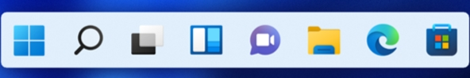
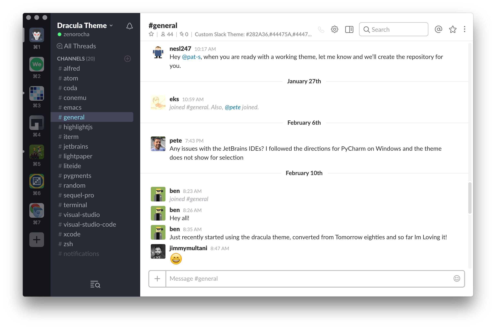
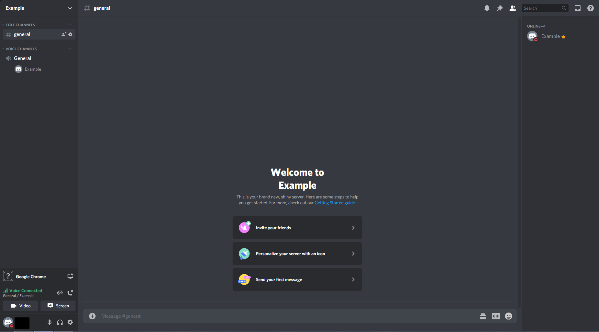
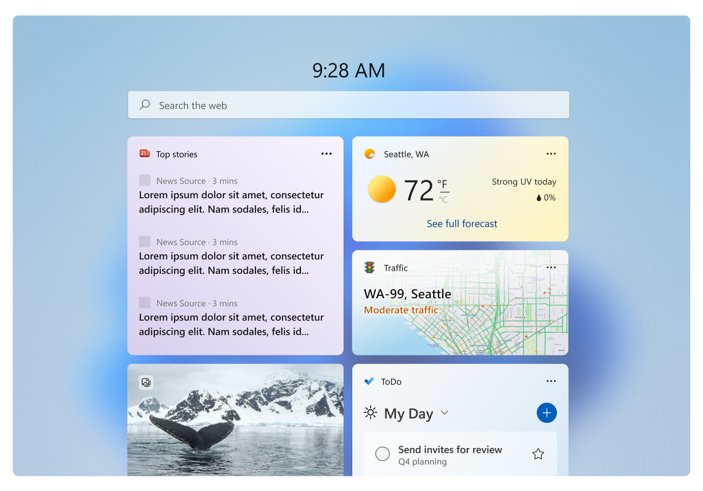
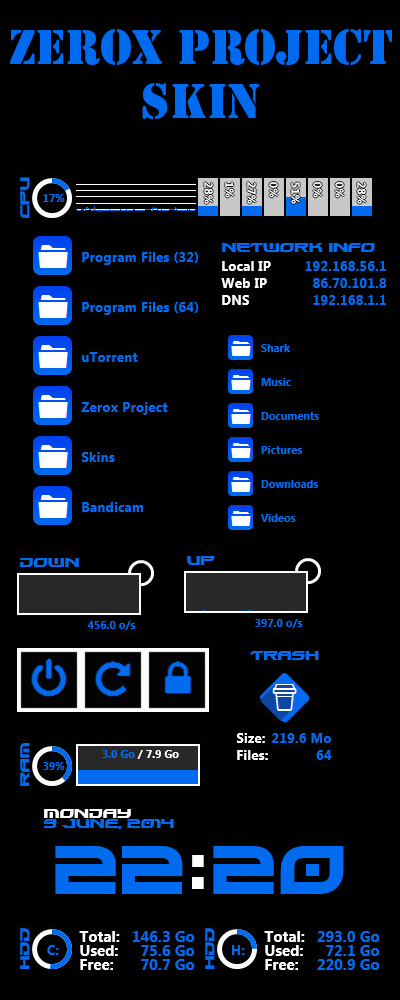
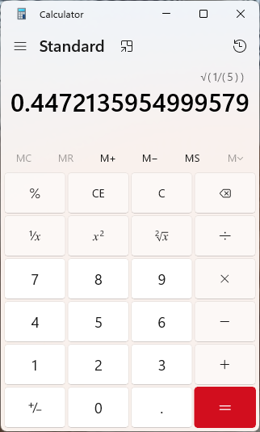

트레이 · 작업표시줄 · Alt+Tab · 항상 위/아래 · 바탕화면 상주 — 상용 앱이 각각을 어떻게 처리하는지 그림으로 비교합니다. 텍스트 보고서: 창모드-조사-보고서.md
Windows 규칙상 Alt+Tab은 창을 "활성화 = 맨 앞으로" 올립니다. 그래서 "항상 바탕화면 아래에 깔려 있기"와 "Alt+Tab으로 불러오기"는 동시에 불가능합니다. 둘 중 하나를 골라야 합니다.
아래는 실제 앱 스크린샷입니다(출처·라이선스 각 이미지 아래 표기). "다른 앱 쓰는 중 불러보기"를 바탕화면 상주 위젯류(Rainmeter·Win11 위젯)는 핫키·'항상 위'로, 트레이 앱(Slack·Discord)은 일반 앱 창+Alt+Tab으로 해결합니다.


💬 Slack 실제 화면
평범한 데스크톱 앱 창. 보일 때 작업표시줄·Alt+Tab에 그대로 — '바탕화면 상주'는 안 함.
"Dracula Theme being used on Slack" © Carolinedmoreschi · CC BY-SA 4.0 · via Wikimedia Commons

💬 Discord 실제 화면
일반 앱 창. 설정에서 ‘최소화=작업표시줄’ / ‘닫기(✕)=트레이로’를 분리해 고를 수 있음(축 분리의 좋은 예).
"DiscordServerExample" © Emtra · CC BY-SA 4.0 · via Wikimedia Commons

🪟 Windows 11 위젯 보드 실제 화면
독립 창이 아니라 화면 위로 덮이는 오버레이 패널. 작업표시줄엔 ‘위젯 버튼’ 하나만, Alt+Tab엔 안 나옴.
Windows 11 Widgets hero image © Microsoft · Microsoft Learn 문서

🌧 Rainmeter 스킨 실제 화면
바탕화면에 상주하는 위젯형 스킨. 사용자가 Z순서를 Stay Topmost / Topmost / Normal / Bottom / On Desktop 5단계로 직접 고름(참고 모델).
"Zerox Project Rainmeter Skin" © Shark-oxi · CC BY-SA 3.0 · via Wikimedia Commons

📌 계산기 · Sticky · OneNote 실제 화면
제목줄 우측의 ‘항상 위(Keep on top)’ 아이콘(↗가 있는 작은 사각형). Alt+Tab 대신 늘 다른 창 위에 떠서 흘끗 보기.
"Calculator on Windows 11" © Microsoft · MIT License · via Wikimedia Commons
⚙ 메뉴의 “트레이 아이콘 사용” 하나로 두 모드가 전환됩니다 — 사용자가 고르신 방식입니다.
트레이 OFF — 바탕화면 위젯 기본
트레이 ON — 일반 앱 창 현재 설정
Slack·Discord식. 바탕화면 상주와 무관하게 Alt+Tab 켜기 가능. 유연하지만 토글 4개 재배선 필요.
트레이 켜면 작업표시줄·Alt+Tab 노출. 이미 됨. 추가 구현 없음.
자유도 최대. ‘항상 위’로 Alt+Tab 없이 늘 보기 가능. 작업량 최대.
‘항상 아래’ 정체성 유지하며 다른 앱 중 호출. Alt+Tab은 여전히 불가.
창모드-조사-보고서.md 참조. 실제 앱 스크린샷이 아님(폐쇄망·오프라인).